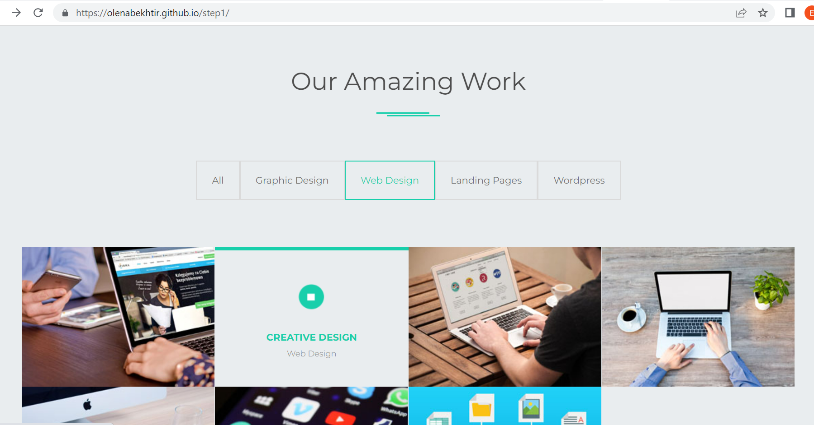
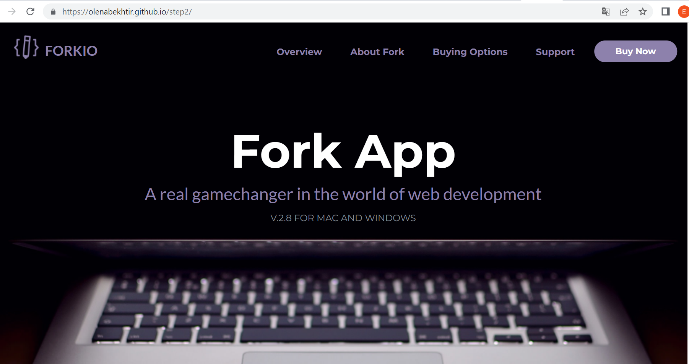
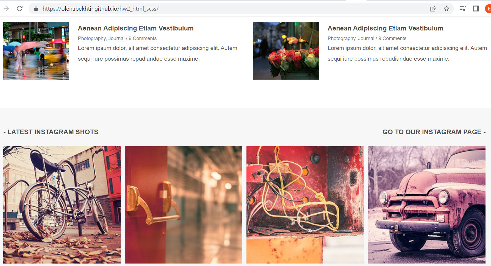
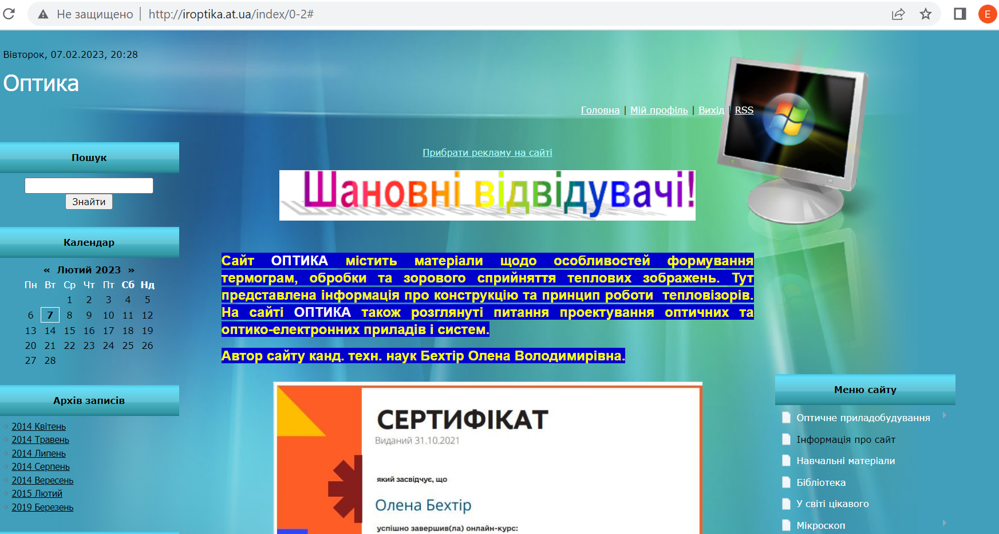
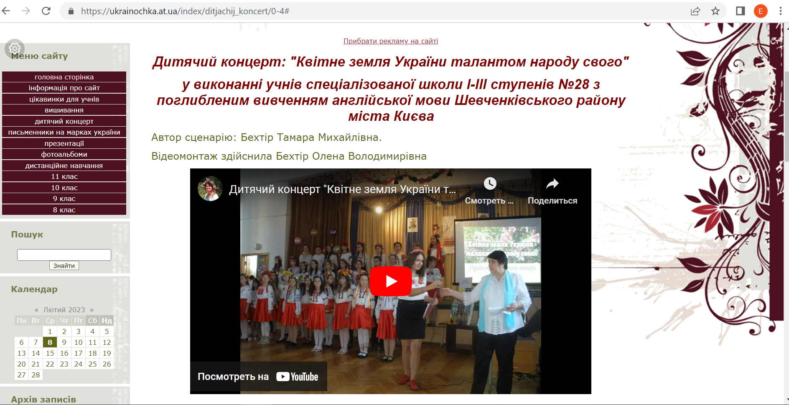
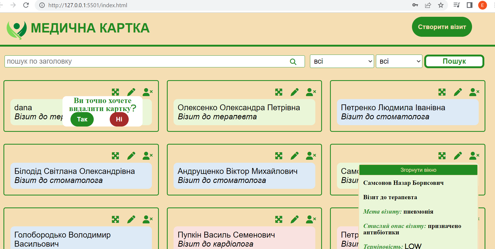

I created the first two sites using the UCOZ designer back in 2014, was engaged in their support, development and content for a long time, after which I became seriously interested in front-end development and decided to develop professionally in this field. During my studies at the FrontEnd courses at DAN-IT, I made three projects. My skils: HTML5, CSS3, SCSS, JS, jQuery, Bootsrap, GULP, BEM methodology, Git (GitLab, GitHub), AJAX, OOP, ES6, I have experience in adaptive layout, layout based on Figma layouts. The portfolio presents some of my works and projects for the past six months. This business card site is made using Bootstrap, the rest of the work can be viewed on GitLab and GitHub
One-page site without adaptive
HTML5, CSS3, JS, jQuery (carousel slider), plugin Masonry (the last block with pictures)
 go
One-page site with adaptive
HTML5, JS, SCSS, GULP, teamwork GitLab, used BEM methodology, media queries for adaptive layout (adaptive layout first-mobile)
 go
One-page site with adaptive
HTML5, JS, SCSS, GULP (assembly of the project), BEM methodology, media queries, mixins
 go
Multi-page site
Site constructor UCOZ (I created the site and filled it with content)
 go
Multi-page site
Site constructor UCOZ (I created the site and filled it with content)
 go
Project "Medical card"
HTML5, CSS3, JS, AJAX (methods POST, PUT, GET, DELETE, fetch-requests), OOP, ES6
 View on GitLab
2022-2023 DAN-IT. Front End courses (HTML (5), CSS (3), JavaScript, jQuery, Culp, responsive layout, SCSS, AJAX, Bootstrap, GIT, OOP, ES6-modules)
2022 Distance course: "Fundamentals of Web UI Development 2022" through the Prometheus platform
2018 "Citrus Academy" (ROBO.HOUSE — house of robots) - advanced training courses in robotics and artificial intelligence programming (Python programming)
2012 "UKRSTENO" — professional development courses "Advertising, printing and web design"(Adobe Illustrator, Adobe Photoshop, Flash Macromedia)
2006 I defended my thesis and obtained the scientific degree PhD of Technical Sciences in the specialty "Optoelectronic Systems"
1994-2000 Studied at the National Technical University of Ukraine "Kyiv Polytechnic Institute" majoring in "Laser and opto-electronic engineering". In 2000, I received a diploma with honors in optical engineering
2022 Distance course: "Fundamentals of Web UI Development 2022" through the Prometheus platform
2018 "Citrus Academy" (ROBO.HOUSE — house of robots) - advanced training courses in robotics and artificial intelligence programming (Python programming)
2012 "UKRSTENO" — professional development courses "Advertising, printing and web design"(Adobe Illustrator, Adobe Photoshop, Flash Macromedia)
2006 I defended my thesis and obtained the scientific degree PhD of Technical Sciences in the specialty "Optoelectronic Systems"
1994-2000 Studied at the National Technical University of Ukraine "Kyiv Polytechnic Institute" majoring in "Laser and opto-electronic engineering". In 2000, I received a diploma with honors in optical engineering
2019-2022 I worked as a teacher of physics and astronomy in Kyiv Regional Higher Vocational School of Construction. Distance education was carried out with the help of its own website https://iroptika.at.ua, as well as on the ClassRoom platform, held online meetings in GoogleMeet, Zoom, developed a number of training and control tests using Google forms, prepared illustrative material using the Canva resource, developed and posted the following quizzes on the https://quizizz.com resource: Electric field and electric current", "Nature of light", "Interference and diffraction of light"). I also developed presentations and reference notes (topics: optics, quantum and nuclear physics, astronomy), which were tested at the "Atmospheric School" educational institution (agreement No. 14-12/1P dated 12.14.2020)
2013-2019 I taught special optical disciplines at the Optical-Mechanical College of Taras Shevchenko Kyiv National University. I taught the following special optical disciplines: "Optical measurements", "Telecommunications systems and information distribution", "Modern methods of optical materials research", "Computer image processing", "Methods and tools of computer information technologies in optotechnics", conducted computer practice (MS Office: Word, Excel, PowerPoint, optical programs)
2008-2012 State enterprise "Printing plant "Ukraine" (position: chief specialist in the engineering service). Worked with various technical documentation, as well as with contracts for the purchase of works and services necessary for the reliable and uninterrupted operation of production equipment (purchase and maintenance of electrical and energy equipment, repair and modernization of existing printing equipment, etc.)
2005–2008 State Department for Communications and Informatization of the Ministry of Transport and Communications of Ukraine (position: chief specialist). Participated in the formation and implementation of the National Informatization Program of Ukraine, in particular, dealt with issues of creating information and analytical telecommunication systems for telemedicine, the introduction of electronic digital signatures, performed support for contracts for the performance of works under various informatization projects
2002-2005 Institute of Semiconductor Physics of the National Academy of Sciences of Ukraine (position: acting M.Sc., graduate student). I was engaged in the creation and improvement of software for a thermal imaging device in terms of image processing. Performed calculations of the optical path of a thermal imaging system with a single-element photoreceptor and a line of photoreceptors (photoreceptor based on Cd-Hg-Te)
2000-2002 Public enterprise "Central Design Bureau "Arsenal" (position: design engineer). Design and calculation of optical systems, image processing with software. Preparation of design and regulatory and technical documentation
2013-2019 I taught special optical disciplines at the Optical-Mechanical College of Taras Shevchenko Kyiv National University. I taught the following special optical disciplines: "Optical measurements", "Telecommunications systems and information distribution", "Modern methods of optical materials research", "Computer image processing", "Methods and tools of computer information technologies in optotechnics", conducted computer practice (MS Office: Word, Excel, PowerPoint, optical programs)
2008-2012 State enterprise "Printing plant "Ukraine" (position: chief specialist in the engineering service). Worked with various technical documentation, as well as with contracts for the purchase of works and services necessary for the reliable and uninterrupted operation of production equipment (purchase and maintenance of electrical and energy equipment, repair and modernization of existing printing equipment, etc.)
2005–2008 State Department for Communications and Informatization of the Ministry of Transport and Communications of Ukraine (position: chief specialist). Participated in the formation and implementation of the National Informatization Program of Ukraine, in particular, dealt with issues of creating information and analytical telecommunication systems for telemedicine, the introduction of electronic digital signatures, performed support for contracts for the performance of works under various informatization projects
2002-2005 Institute of Semiconductor Physics of the National Academy of Sciences of Ukraine (position: acting M.Sc., graduate student). I was engaged in the creation and improvement of software for a thermal imaging device in terms of image processing. Performed calculations of the optical path of a thermal imaging system with a single-element photoreceptor and a line of photoreceptors (photoreceptor based on Cd-Hg-Te)
2000-2002 Public enterprise "Central Design Bureau "Arsenal" (position: design engineer). Design and calculation of optical systems, image processing with software. Preparation of design and regulatory and technical documentation